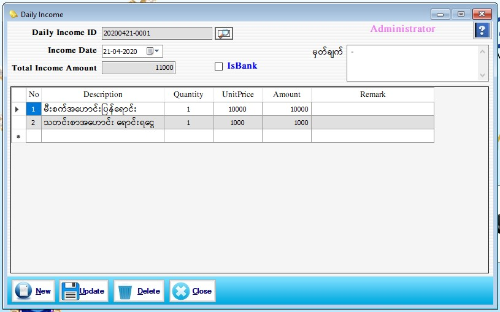

Daily Income Setup

- Daily Cash Transaction အောက်မှ Daily Income Form ကိုဖွင့်ပါ။
- ဆိုင်မှရောင်းချသော အထည်ပစ္စည်းများမှရငွေမဟုတ်ဘဲ တခြားဝင်ငွေများကို ထည့်သွင်းရာတွင် အသုံးပြုရမည့် Form ဖြစ်ပါသည်။ (ဥပမာ- ဆိုင်သုံးမီးစက်အဟောင်း ပြန်ရောင်းငွေ၊ သတင်းစာအဟောင်း ရောင်းရငွေ ၊ စသည်ဖြင့်...)
- Daily Income ID သည် Series အလိုက် Software မှ Auto ပြပေးနေလိမ့်မည်။
- Income Date သည် လက်ရှိရောက်နေသော နေ့စွဲကိုပြပေးနေလိမ့်မည်။
- Total Income Amount တွင် ယနေ့ ဝင်ငွေ စုစုပေါင်းငွေပမာဏကိုပြပေးနေလိမ့်မည်။ မှတ်ချက်တွင် လိုအပ်သည်များကို ဖြည့်စွက်နိုင်ပါသည်။
- အောက်ပါဇယားထဲတွင် ယနေ့ဝင်ငွေများကို ထည့်သွင်းရပါမည်။ No တွင် အမှတ်စဉ်အလိုက် Software မှ Auto ပြပေးနေလိမ့်မည်။ Description တွင် ဝင်ငွေနာမည်ကိုရေးပါ။ Quantity နှင့် Unit Price ကိုထည့်ပေးပါက Amount သည် Software မှ Auto တွက်ပေးမည်ဖြစ်ပြီး Remark တွင် ကြိုက်နှစ်သက်ရာ ဖြည့်စွက်နိုင်ပါသည်။ Data များဖြည့်စွက်ပြီးပါက Save Button ကိုနှိပ်၍ သိမ်းဆည်းနိုင်ပါသည်။
- သိမ်းဆည်းပြီးသား Data များအား ပြန်လည်ကြည့်ခြင်း၊ ပြင်ဆင်ခြင်းများပြုလုပ်ချင်ပါက Daily Income ID ၏ ဘေးတွင် ရှိသော မှန်ဘီလူး button ကိုနှိပ်ပြီးပြန်လည်ကြည့်ရှုပြင်ဆင်ချင်သော Expense အား ရွေးချယ် ပြီးပြင်နိုင် ပါသည်။
- သိမ်းဆည်းပြီးသား ထည့်ပြီးသား Data များကို ဖျက်လိုလျှင် မှန်ဘီလူး button အားနှိပ်ပြီးရှာပါ။ ထို့နောက် မိမိဖျက်လိုသော Data ကို Delete Button ကိုနှိပ်၍ ဖျက်နိုင်ပါသည်။
- Income အသစ်ထည့်လိုပါက New Button ကိုနှိပ်ပြီး အသစ်ထည့်နိုင်ပါသည်။
- Daily Income Form အား အသုံးပြုပြီးပါက Close Button ကိုနှိပ်၍ ပိတ်နိုင်ပါသည်။